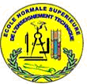
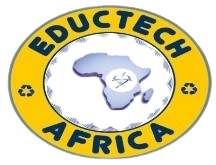
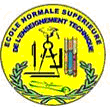
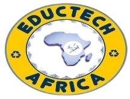

L’ECOLE NORMALE SUPERIEURE DE LIBREVILLE,
L’ECOLE NORMALE SUPERIEURE DE L’ENSEIGNEMENT TECHNIQUE DE LIBREVILLE,
L’ONG EDUCTECH AFRICA
ORGANISENT
UN COLLOQUE – SYMPOSIUM INTERNATIONAL HYBRIDE SUR LE THEME :
« PERSPECTIVES CRITIQUES SUR LES TECHNOLOGIES NUMERIQUES EDUCATIVES DANS LES UNIVERSITES AFRICAINES : L’ENJEU DE LA FORMATION DES FORMATEURS »
Suite au succès de la première édition du e-colloque international EAD 2021: « Enseignement à distance en Afrique subsaharienne francophone en temps de Covid-19 : bilans, acquis et perspectives » (29-30 novembre 2021), l’Ecole Normale Supérieure de Libreville (ENS), l’Ecole Normale Supérieure de l’Enseignement Technique de Libreville (ENSET) et l’ONG EDUCTECH AFRICA , organisent la 2ème édition de cette rencontre qui aura lieu en mode hybride à l’Ecole Normale Supérieure de l’Enseignement Technique de Libreville les 28 et 29 novembre 2024, sur le thème : « Perspectives critiques sur les technologies numériques éducatives dans les universités africaines : l’enjeu de la formation des formateurs : ».
ORGANISATEURS
 



ARGUMENTAIRE
Depuis ces dernières années, le numérique est devenu omniprésent dans notre vie quotidienne et les innovations technologiques successives générées par le digital ont fini par modifier en profondeur nos habitudes dans tous les domaines. C’est ainsi que le numérique a bouleversé le secteur de l’éducation, et tout particulièrement celui de l’enseignement supérieur où des innovations pédagogiques se développent à travers son utilisation. En effet, ce que l’on peut dire aujourd’hui sans risque de se tromper, c’est que l’université n’a pas échappé au tournant numérique des organisations, qu’il s’agisse de l’informatisation des processus administratifs ou bien du changement de posture des enseignants et des étudiants (IGAENR 2018). L'intégration et l'utilisation du numérique sont de ce fait devenus des incontournables et une obligation pour ces universités et cela à tous les niveaux (stratégie, gouvernance, gestion du changement, mise en place des infrastructures, enseignement, recherche, services aux étudiants, rayonnement, etc.). Ainsi, de plus en plus d’universités optent pour de nouveaux modèles d’enseignement adaptés au numérique et ce, en raison des grands avantages qu’il procure tant aux étudiants qu’aux enseignants. Bernard Stiegler (2018) affirme à ce propos que « la métamorphose numérique des savoirs et de l’enseignement constitue un enjeu majeur du 21e siècle et se place au premier rang des priorités des universités et des organismes de recherche. De nouvelles conditions de publication, de certification et d’éditorialisation se mettent en place ».
Toutefois, nul besoin de rappeler le fait que l’accessibilité technologique et l’utilisation du numérique ne sont pas les mêmes chez l’ensemble des enseignants souhaitant mettre en place des pratiques innovantes en contexte d’enseignement car, si en Occident plusieurs enseignants expérimentés ont adopté le numérique en pédagogie universitaire, la grande majorité des enseignants africains sont quant à eux grandement limités à cet égard. En parallèle de cette logique, la crise de la COVID-19 n’a fait que mettre en évidence les problèmes préexistants sur les plans technologiques et pédagogiques auxquels les établissements d'enseignement supérieur de ces États ont eu à faire face (Pierre, 2020). Face aux enjeux posés par l’apprentissage à distance qui s’imposait, beaucoup de formateurs, confrontés à de nouveaux outils du digital learning (dont ils ne maitrisaient pas toujours l’utilisation), ont rencontré des difficultés pour passer d’un enseignement classique à un autre mode où les TICE sont omniprésentes. À la fois pluri et interdisciplinaire, ce colloque s’adresse aux enseignants-chercheurs, aux formateurs et aux étudiants et, de façon générale, à tous ceux qui sont attentifs aux évolutions du numérique en éducation et en formation.
Voici quelques questions qui pourraient être abordées dans le cadre de ce colloque :
- Les enseignants du supérieur intègrent t’ils le numérique dans leurs pratiques d’enseignement ?
- Les acteurs de l'enseignement supérieur (professeurs et étudiants) sont-ils suffisamment formés à l’usage du numérique ?
- Comment former au numérique dans les universités ?
- Quelles sont les caractéristiques des universités qui se positionnent à l’avant du peloton ?
- Existe-t-il un accompagnement des enseignants-chercheurs dans la transition des cours en présentiel vers le numérique ?
- Comment les universités africaines réagissent-elles à leurs nouveaux défis ?
- Quels sont les stratégies et les outils mis en place pour aider le corps professoral à surmonter ces nouveaux défis ?
- Comment intégrer toutes ces technologies dans le contexte actuel de réduction budgétaire ?
LES AXES DU COLLOQUE
Dans tous les cas, il est attendu que les communications problématisent le numérique en éducation et le contextualisent dans un ou plusieurs des axes suivants:
- Pédagogie universitaire et transformation numérique : quelles tendances, quelles formations ?
- Les chantiers d'innovation numérique dans les universités africaines
- L’intégration des technologies en éducation : comment intégrer efficacement l’IA, la réalité virtuelle, la robotique, etc., dans la salle de classe ?
- Les enjeux du numérique à l’université au travers de 3 thèmes : Infrastructures, formation, gouvernance
- Le numérique à l'université : recherche, mobilité et internationalisation des universités
- Numérique et bouleversement de l’univers pédagogique (interfaces et dispositif)
MODALITES PRATIQUES DE SOUMISSION DES PROPOSITIONS DE CONTRIBUTION
Les pré-propositions doivent être adressées à l’adresse suivante :
numeriquecolloque2024@gmail.com
Les propositions de contributions ne devront pas excéder 2500 caractères ; soit l’équivalent d’une page (espaces y compris, police Times New Roman taille 12, interligne simple). Elles doivent comporter les informations suivantes :
- Le titre de la communication
- La session dans laquelle s’insère la proposition
- Les noms et prénoms des auteurs (ainsi qu’une note biographique du (des) contributeur(s) de 50- 80 mots)
- Institution de rattachement
- e-mail et numéro de téléphone des auteurs
- Résumé de la communication : Il s’agit de présenter de façon concise les objectifs, l’axe dans lequel s’insère la proposition, la problématique, la méthodologie qui sera utilisée, les résultats obtenus et leur signification- 04 à 05 mots clés
- Une courte bibliographie et les grandes articulations du plan de la future communication.
NB : Seules les propositions de communications retenues recevront une réponse. Les actes du colloque feront l’objet d’une publication. En vue de leur production, les auteurs des communications retenues seront invités à soumettre un manuscrit conforme aux normes édictées par le comité scientifique du colloque
CRITERES D'EVALUATION
Les propositions seront évaluées anonymement par deux membres du comité scientifique en fonction des critères suivants : Pertinence et originalité de la communication ou de la recherche - Pertinence de la problématique (cadre théorique, questions, objectifs, ..) - Méthodologie (modes et instruments d’analyses, nature du corpus) - Apports scientifiques (résultats, perspectives).
TARIFS INSCRIPTION
| Participation en présentiel | Participation en ligne | |
|---|---|---|
| Etudiants, doctorants et retraités (ENS, ENSET) | 8 000 F CFA/12€ | 3 000 FCFA/ 5€ |
| Etudiants, doctorants et retraités (autres) | 10 000 F CFA/15€ | 5 000 FCFA/ 8€ |
| Enseignants, chercheurs (ENS, ENSET) | 45 000 FCFA/69€ | 35 000 FCFA/54€ |
| Enseignants, chercheurs (autres) | 55 000 FCFA/85€ | 45 000 FCFA/69€ |
| Autres participants | 70 000 FCFA/ 107€ | 55 000 FCFA/85€ |
| Participation en présentiel | Participation en ligne | |
|---|---|---|
| Etudiants, doctorants et retraités (ENS, ENSET) | 10 000 F CFA/15€ | 5 000 FCFA/ 8€ |
| Etudiants, doctorants et retraités (autres) | 15 000 F CFA/21€ | 8 000 FCFA/ 12€ |
| Enseignants, chercheurs (ENS, ENSET) | 50 000 FCFA/77€ | 40 000 FCFA/52€ |
| Enseignants, chercheurs (autres) | 60 000 FCFA/92 € | 50 000 FCFA/77€ |
| Autres participants | 80 000 FCFA/ 123 € | 60 000 FCFA/92€ |
Les frais d’inscription au colloque n’incluent pas l’hébergement (il sera possible de réserver directement une chambre lors de l'inscription) ni les frais de transport.
Ils comprennent :
- la participation aux activités scientifiques ;
- les pauses-café ;
- les déjeuners
- le cocktail
- La documentation remise aux participants
SUPPLEMENTS:
| Tarifs en CFA/ € | |
|---|---|
| Actes édités sur papier | 15 000 FCFA /22,90 € |
| Diner de gala (29 novembre 2024) | 30.000 FCFA/ 45,81€ |
| Excursion (30 novembre 2024) | 65 000 FCFA/ 99,10 € |
| Personnes accompagnantes | 45 000 FCFA/68,61€ |
PRESIDENTS D’HONNEUR DU COLLOQUE
Rufin Dizambou (MC), Directeur Général de l’École Normale Supérieure de Libreville
Guy Richard Kibouka (MC), Directeur Général de l’Ecole Normale Supérieure d’Enseignement Technique de Libreville
PRESIDENTE DU COLLOQUE
Anasthasie Obono Mba, épouse Essono (MC-HDR), Ecole Normale Supérieure de Libreville
COMITE SCIENTIFIQUE
RESPONSABLE DU COMITE SCIENTIFIQUE
Pamphile Mebiame Akono (PT), Université Omar Bongo
MEMBRES DU COMITE SCIENTIFIQUE
Alain Jaillet (PT), Université de Cergy-Pontoise Annie Beka Beka Annie (MC), École Normale Supérieure de Libreville Assembe Ella Charles Philippe (MC), Ecole Normale Supérieure de Libreville Auguste Ndoutoumou Ndong (PT), École Normale Supérieure de Libreville Bernardin Minko Mvé (MC), Université Omar Bongo Clément Moupoumbou (MC), Université Omar Bongo Daniel Peraya (PT), Université de Genève Eugénie Eyang (PT), Ecole Normale Supérieure de Libreville Florence Ngueloube (MC), Ecole Normale Supérieure de Libreville Georges-Louis Baron (PT), Professeur émérite, Université de Paris Gilbert Nguema Endamne (PT), Ecole Normale Supérieure de Libreville Hilaire Ndzang Nyangone (MC), Ecole Normale Supérieure de Libreville Jacques Beziat (PT), Université de Caen Normandie Jean Luc Rinaudo (PT), Université de Rouen-Normandie Joseph Holenu Magenda (PT), Université de Kinshasa Julia Ndibnu-Messina Ethé (PT), Université de Yaoundé I Maouchi Amel (MC), Université Frères Mentouri, Constantine 1 Marcelle Ibinga (MC), Institut Universitaire des Sciences de l'Organisation (IUSO) Nebout Arkhurst Patricia (PT) École normale supérieure d’Abidjan (RCI) Pamphile Mebiame Akono (PT), Université Omar Bongo Pierre Fonkoua (PT), ICT University Sena Yawo Akakpo-Numado (PT), Institut National des Sciences de l’Université de Lomé Serge Armel Attenoukon (MC), Université d’Abomey-Calavi Sondess Zarrouk (PT), Université de Haute Alsace Sylvie Bakong (MC), Université Omar Bongo Thierry Ardouin (PT), Université de Rouen-Normandie Véronique Solange Okome Beka (MC), Ecole Normale Supérieure de Libreville Yvette Moussounda (MC), Ecole Normale Supérieure de Libreville Clement Agbangla (MC) Université d'Abomey-Calavi, Benin
COMITE D’ORGANISATION
RESPONSABLE DU COMITE D’ORGANISATION
Romaric Franck Quentin de Mongaryas (MC), Ecole Normale Supérieure de Libreville
MEMBRES DU COMITE D’ORGANISATION
Achille Candice Kouawo, Institut National des Sciences de l’Université de Lomé Alix Nina Mboumba, École Normale Supérieure de Libreville Alphonse Zé Waghe, Ecole Normale Supérieure de Libreville Anasthasie Obono Mba , Ecole Normale Supérieure de Libreville André Christian Ebane Elang, Ecole Normale Supérieure de Libreville Arnold Nguimbi, Ecole Normale Supérieure de Libreville Armel Nguimbi, Ecole Normale Supérieure de Libreville Camille Ambassa École Normale Supérieure de Libreville Céline Biloghe-Ekouaghe, Ecole Normale Supérieure de Libreville Clarisse Maryse Mimbuih M'Ella, Ecole Normale Supérieure de Libreville Clément Moupoumbou, Université Omar Bongo Dieudonné Nguema Minko, Ecole Normale Supérieure de Libreville Eleonore Ngoma Voumbi, École Normale Supérieure de Libreville Elza Kogou Nzamba, Ecole Normale Supérieure de Libreville Emmanuelle Nguema Minko, Ecole Normale Supérieure de Libreville Euloge Bibalou, Ecole Normale Supérieure de Libreville Germain Koumba Mouity, École Normale Supérieure de Libreville Gervais Owanga Biye, Ecole Normale Supérieure de Libreville Hervé Essono, Ecole Normale Supérieure de Libreville Hervé Ondo Assoumou, Ecole Normale Supérieure de Libreville Joseph Indjendje, Ecole Normale Supérieure d’Enseignement Technique de Libreville Julien Ibouanga, École Normale Supérieure de Libreville Kokou Awokou, Institut National des Sciences de l’Université de Lomé Liliane Ogowet, École Normale Supérieure de Libreville Marcelline Djeumeni Tchamabe, École normale supérieure, Université de Yaoundé I Mary Jospeh Nguema Ango, École Normale Supérieure de Libreville Megne m’Ella Ghislain Désiré, École Normale Supérieure de Libreville Mexcent Zue Elibiyo, École Normale Supérieure de Libreville Mexcin Ebane, École Normale Supérieure de Libreville Faustin Mezui m’Okane, École Normale Supérieure de Libreville Nathalie Ebaneth, épouse Sima Eyi, Ecole Normale Supérieure de Libreville Olga Perpétue Medza, École Normale Supérieure de Libreville Olga Théresia Zemo , École Normale Supérieure de Libreville Pélagie Mouyivou Bongo, École Normale Supérieure de Libreville Robert Angoue Ndoutoume, École Normale Supérieure de Libreville Roger Moumba Mbina, Ecole Normale Supérieure de Libreville Rosalie Andjouomo, Ecole Normale Supérieure de Libreville Rufin Didzambou, Ecole Normale Supérieure de Libreville Séverin Emane Mba, Ecole Normale Supérieure de Libreville Solange Kiki, Ecole Normale Supérieure de Libreville Théophile Bilakani, Institut National des Sciences de l’Université de Lomé Vincent Essono Assoumou, École Normale Supérieure de Libreville